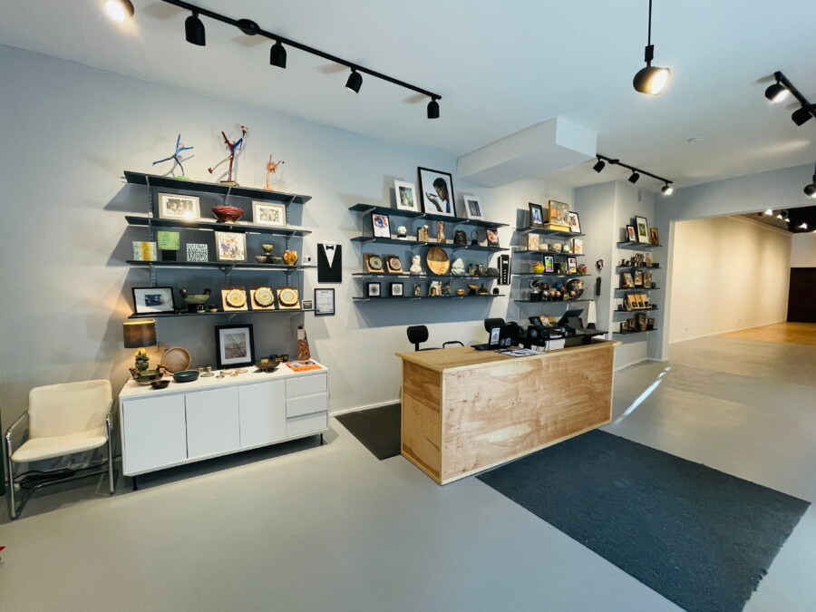

From the Hands of Our Community: A New Art Shop Opens Its Doors
6311arts, has unveiled a community art shop aimed at selling one-of-a-kind and handcrafted goods from artists living and working in Chicago.
The shop offers jewelry, ceramics, t-shirts, prints, and more, many of which are created by the artists whose work appears (or has appeared) in the main gallery space. The retail space offers new works often on a weekly basis. 6311arts represents a plurality of voices from creators whose work may have been underserved by traditional art markets.
“The majority of products sold in our shop were made by artists who live or work in close proximity to our gallery,” said director Holly King. “Our goal is to provide local artists with a place to share their work and connect with neighbors. There’s so much talent in this community, now there is a retail space for it.”
About 6311arts
6311arts is a Chicago-based art center housing over 3000 square feet of gallery, retail, and workshop space. We are an inclusive center focused on supporting and empowering local artists. Learn more about our workshops, gallery, shop, and more at https://www.6311arts.com/
Location
6311arts
6311 N. Clark St.